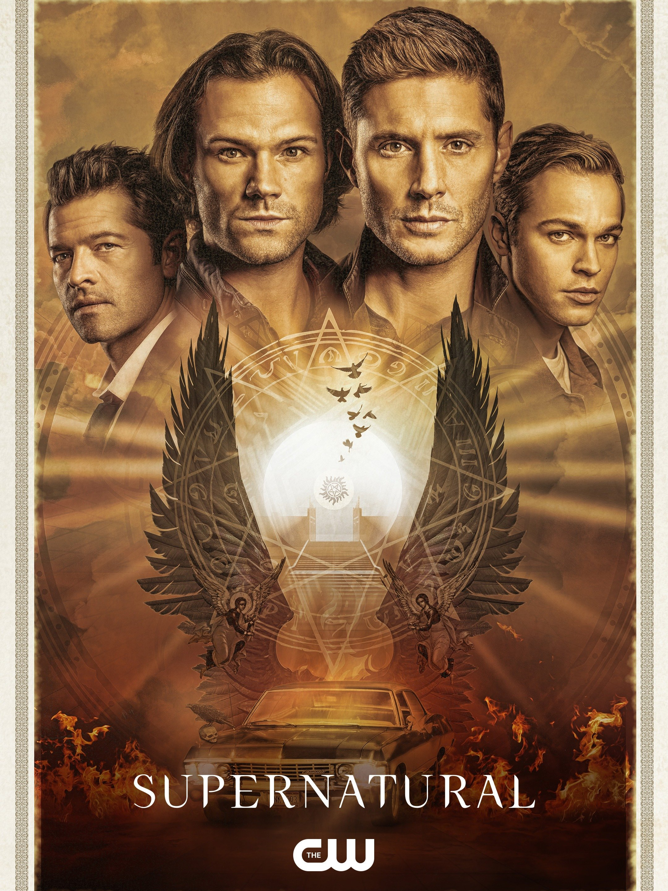

Supernatural
More Information
See this movie on IMDbSaummary:
"Supernatural" is a long-running television series that premiered in 2005. The show follows the Winchester brothers, Sam and Dean, as they hunt demons, ghosts, monsters, and other supernatural beings across the United States.
Their journey begins when their father goes missing, and they embark on a quest to find him while continuing his legacy as "hunters." Along the way, they encounter both friend and foe, including angels, demons, and other hunters.
Throughout the series, Sam and Dean face personal challenges, family secrets, and the looming threat of apocalyptic events. Their bond as brothers and their dedication to saving people and hunting things become the core of the show's narrative.
"Supernatural" is praised for its mix of horror, humor, and mythology, as well as the chemistry between the lead actors, Jared Padalecki (Sam Winchester) and Jensen Ackles (Dean Winchester). The show's enduring popularity and dedicated fanbase have made it a cultural phenomenon in the realm of television series.